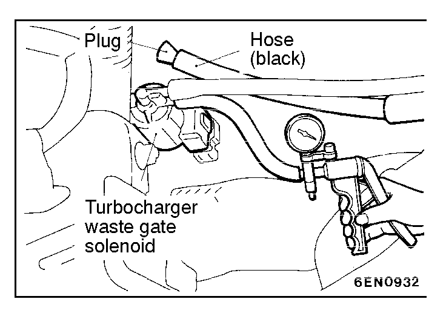
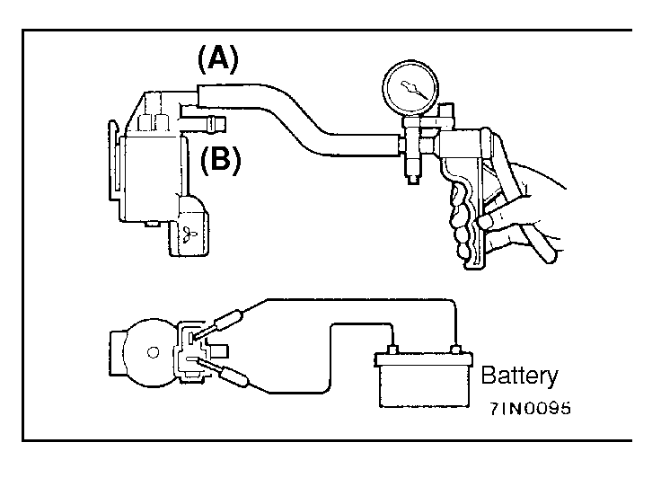

![[Previous]](https://mitsubishitechinfo.com/data/F24S/BUTTONS/fprevg.png)
![[Next]](https://mitsubishitechinfo.com/data/F24S/BUTTONS/fnextg.png)
 
INTAKE CHARGE PRESSURE CONTROL SYSTEM CHECK <Turbo>
(1)After the diagnostic trouble code of MFI system is completely read, turn off the ignition switch.
(2)Disconnect the hose (black) from the turbocharger waste gate solenoid and plug this hose.
(3)Connect a hand vacuum pump to the turbocharger waste gate solenoid nipple to which the hose (black) was connected.

(4)Use the vacuum pump to apply negative pressure, and check the negative pressure condition while the engine is stopped and while it is idling.
Engine state
Normal state
Stop (Ignition switch: ON)
Negative pressure is
maintained
Idle (after warmup)
Negative pressure leaks
NOTE
If this check indicates an abnormal condition, the turbocharger waste gate solenoid is broken.